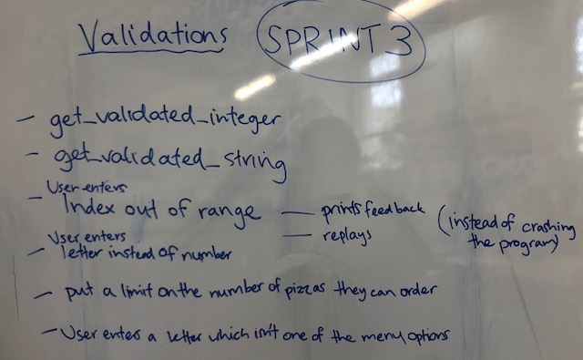
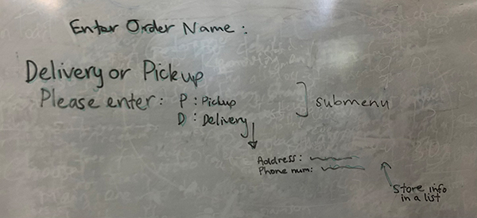
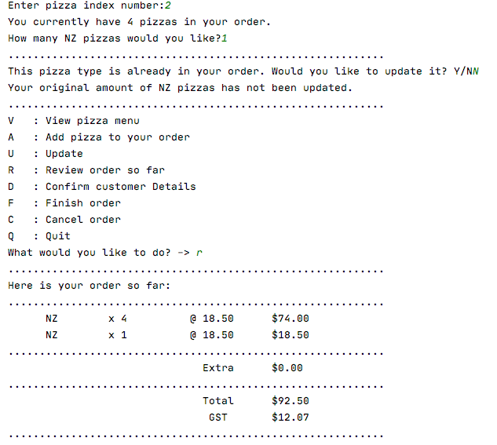

Brief
To create a program which allows a user to enter customer details (address, name, pickup/delivery requirements and their pizza order).
This information, including delivery details, itemised order and total cost, will be stored and displayed to the user in a receipt format.
Overall Project Backlog
This is my Project Backlog at the end of the project.
The Done column shows all the functions I incorporated, and the To Do column shows potential additions I could develop in the future.
Sprint One
A program which offers a basic main menu, with an option to either View the pizza menu, or Quit the program.
If the user chooses the Quit option, they are asked for confirmation to either end the program or return to the main menu.

Sprint board

Git commit

Test to show the basic program I created in Sprint 1

Reflection
This first sprint was successful as I created a basic program as outlined in the aim. The confirmation option was important to avoid miscommunication.
Sprint Two
A program which allows the user to enter the customer's pizza order and stores this information.
This sprint's 'add' function, adds a new pizza to the order. When this function is called, it prints the pizza menu, requests user input of the index number for the pizza type they would like to order, and requests an integer entry for how many of that pizza type they would like.
Finally, it prints their order so far in a simple format.

Sprint board

Testing
Frau:
After Frau tested my programme, in confirming whether they want to quit, instead of having Q and B, I used ‘Y’ and ‘N’ because Frau tried to enter those commands.
I also found out I needed to clarify what an index number is, so I added an extra column heading saying “index” to give frau an idea of what she needs to enter when asked to choose a pizza.
Errors
Below are some Errors I found when testing Sprint Two, and how I addressed/or plan to address them.
Index out of range:
Solution to error:
I will address this error in Sprint Three, by creating a validated integer entry function which does not allow the user to enter a pizza index that is out of range, and will give feedback.
Using the pizza's index number (rather than pizza name) when printing the receipt and user messages
Solution to error:

Re-asks to "Start" order midway through

Solution to error:

Reflection
Sprint Three
This is my Validations Sprint. Validating my functions enables me to set boundaries for the user's input, and ensures the program doesn't crash when unexpected input is entered.
Plan
Design decision

Sprint board
Testing:
Validation errors that the validated_integer and validated_string functions in this sprint solved:
- If the user enters a string when an integer is requested
- If the user enters an integer when a string is requested
- If the user enters an string that isn't one of the menu options
- If the user tries to enter more pizzas than is allowed
- More specific feedback explaining index number and ordering limitations
- Validated totals function - max of 50 pizzas ordered overall


Sprint 3.5
This sub-sprint incorporates a Totals function, which calculates the total number of pizzas in the order so far. Creating this function allows me to validate the user's entry, by ensuring there can be a limit (5 max) of the total number of pizzas in their order.

Iterative decision of how to create a validated totals function: 1st Option and 2nd option

Testing:
I created a testing, pre-made order in the menu to understand program and quickly show that my_order is being added to, appended

Testing finished totals function
Failed test:

Final validated totals function:
Git commit and git history at the end of Sprint 3

Reflection
Things to address in the next sprint:
When the list is empty (the user hasn't ordered any food yet), the review option/function should print a customised message to say "You haven't begun your order yet".
Sprint Four
A program which calculates total cost, and stores this information in a receipt when reviewing the customer order so far.
Plan
Kanban Board

Testing (for functionality before reciept format):
Calculate the cost of each type of pizza
Calculate the total cost of order (price function)

Sprint 4.5
A program which calculates the GST of the order, and shows this below the total cost on the receipt.
Calculate the GST and include as part of receipt
Reflection (+ anything about relevant implications)
What went right:
- Made a temp list for easy testing and included a test menu option to speed up my design process
- Imitated the formatting of an actual Countdown reciept
- Allows the user to enter different currencies (relates to the relevant implications of cultural and accessibility)
- In future sprints I am planning to carry out more validations. One example, is disallowing the user from entering one type of pizza twice eg. India - 2, then India - 5. Instead I should decide (iterative decision) as to whether I validate this to print a message saying you can't do this, or create a function to make a sum of all the India pizzas, regardless of what stage of the order they were entered.
- Built around a function structure as a new feature implies a new function.
- Can be “easily” integrated into the main program using functions. Using code checker ensures tab indents, spacings, line lengths to fit with python conventions.
- Testing (scenario) found bug before program finished
- Regular testing
- Testing individual functions
- Testing their integration into the main program
- Designed and executed more extensive tests (planning “order stories” real life user testing and scenarios)
- Validations
- Back options


What didn't go right:
Things to address in the next sprint:
Overall Project backlog at this point

Code checker - at the end of Sprint 4
Git commit and git history at the end of Sprint 4
Sprint Five
My Sprint 5 is about creating an update function. This new update option in the menu allows the user to review their current order status, to remove currently ordered pizzas or to change the number of pizzas ordered.
Purpose of Sprint 5
Two plans for different ways of designing the Update function:
Kanban Board

Testing
Through testing I realised that my get validated integer function, which limited the user to only ordering 5 pizzas of one type maximum, wasn't working in this update function.
Error as the price of Africa was being changed rather than number of Russia

Solution as the correct update is taking place and is shown in the receipt
Testing the menu option to delete a pizza type:

Run through of this Sprint/the Update function working
Sprint Six
In this Sprint, rather than creating a new function, I decided to run a "Cancel order" feature in the Main Menu. In all the functions that the user could be led to through the other menu options, there s always a quit option available which returns them to the main menu. This means this new Cancel feature is easily accessible from anywhere in the program, addressing the implication of Functionality.
Plan
Kanban Board
Run through of Cancel functioning correctly:
Code checker at the end of Sprint 4 (before and after)


Test with a potential customer situation
I carried out a user test with Mr Khouri, at the point when my program was developed up to the end of Sprint 6.
The customer order

Video of my program completing the above order:
Things I learnt from this test:
I accidentally selected the add option, because of the customer's langauge saying they want to add one more Australia pizza. I should have selected the update option. In future the add option should lead to the update function, if that pizza type has already got some pizzas in the order.
Improvements to make in future versions:
Sprint Seven
A program which asks for and stores customer details, depending on whether their order is for delivery or pickup. Function gets the customer details:
1 - request delivery or pickup (also adds delivery charge under certain conditions)
2 - basic form to enter Name, Address (validated get_string function to allow more than 1 character and set character limits and check for valid characters (for example no * or !))
Plan

Video of my program finding an error after adding delivery charge:
Testing
Error 1 - Selecting the finalise order option, although you haven't filled out customer details yet.
Solution:
Error 2 - $3 charge didn't add on to the total cost
Through testing I discovered that although the delivery fee was printed in the receipt, the total cost wasn't being adapted.
Error found when testing with a real life user - Sophie

Final program working with customer details function incorporated:
Video of real user test of working program (that includes delivery or pickup):
Sprint Eight
A sprint to validate the user's entry; so that they can't order a new Russia pizza, if they have already ordered some Russia pizzas, but instead adds onto the existing number of those pizzas in the order.
Plan:

Iterative decision:
Plan showing two options for the duplicate function.


I carried out both of these options as seen in the videos below.
If duplicated asks user to enter the total they want for that pizza type
If duplicated uses information collected from the Add new pizza function, to add these new pizza onto what is already ordered
Working duplicate pizza function:
Errors found during testing:
Changes not reflected in receipt
Only recognises duplicate (only runs Duplicate function), if the first pizza ordered is the duplicated one

Solution: Is now case sensitive

Cassie - User test at the end of Sprint 8
Lesson Standups


Relevant Implications Summary
Visibility of System Status
Describe:
Address:
Future Proofing
Describe: Is it easy to update or add new features to the program. Can a different programmer do this? Is the code “easy” to understand? Comments and docstrings are used to describe the purpose of functions and other sections of code so another programmer can be quickly “onboarded”.
Address:
Functionality
Describe:
A functional program works well. Is it free from bugs? Does it not crash? Does it add up and store values correctly?
Address:
Usability
Describe:
Can the user recognise, diagnose, recover from errors (error messages). Can the application correct errors and not have to worry the user? Restore a previous state?
Address: